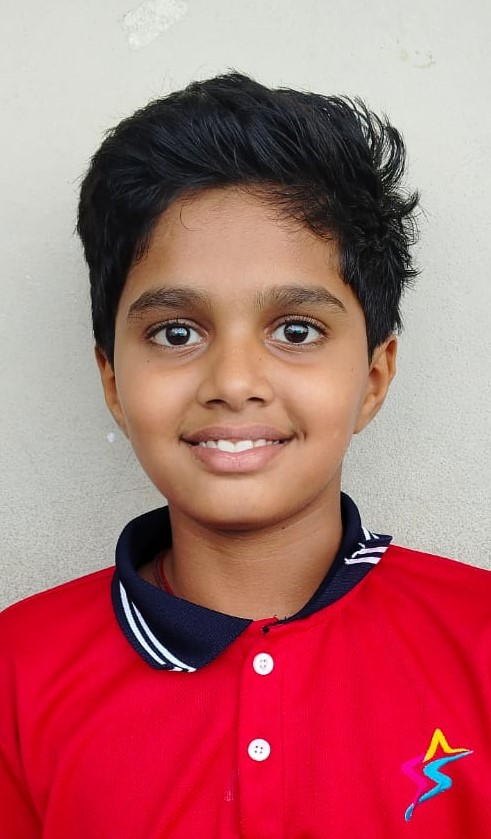
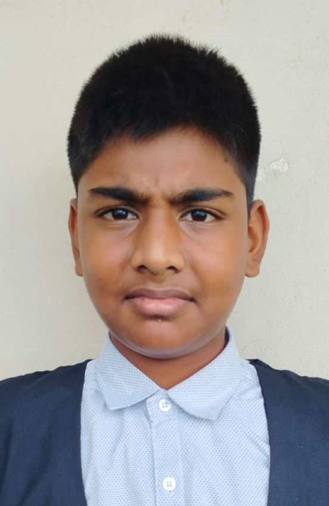
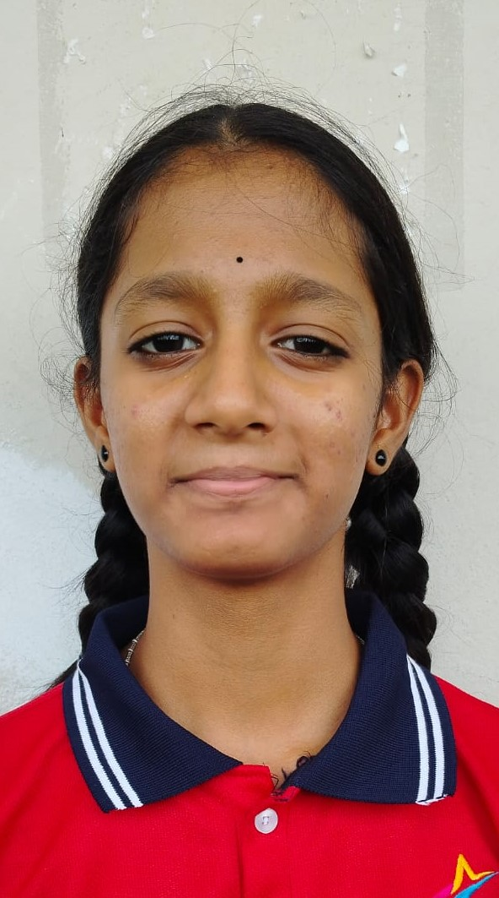
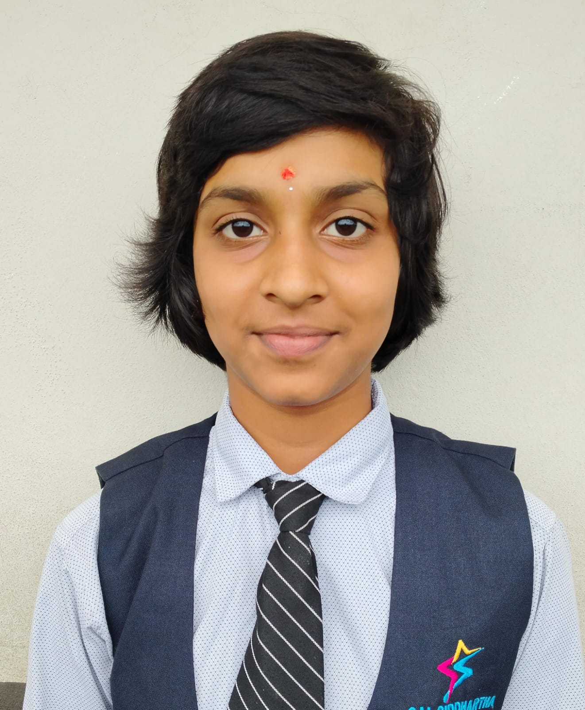
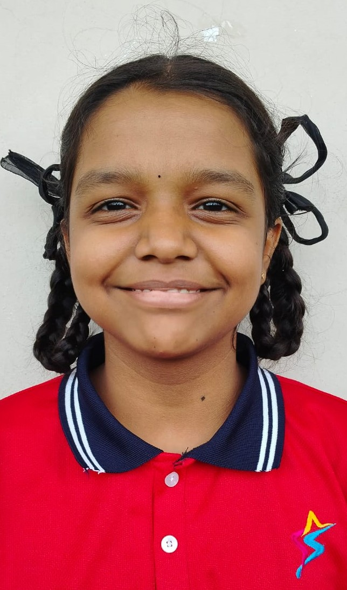
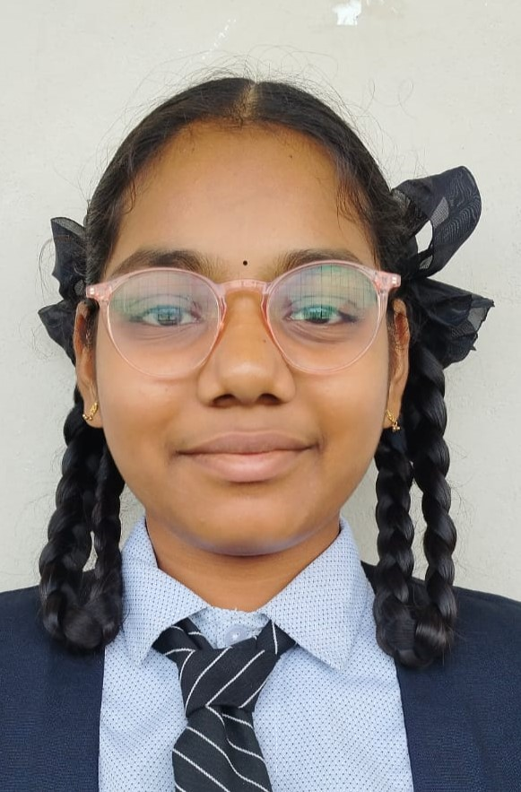
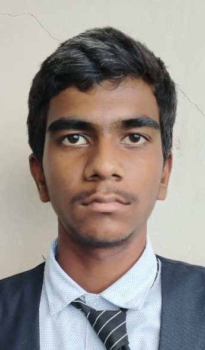
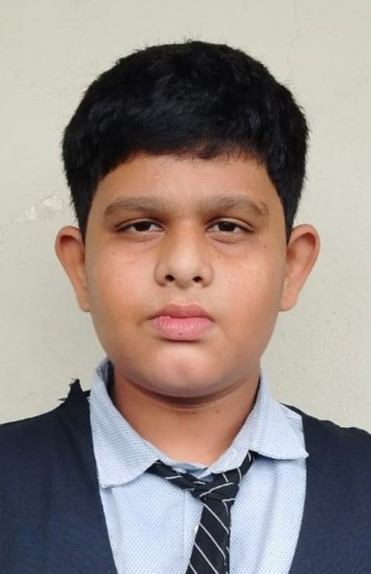
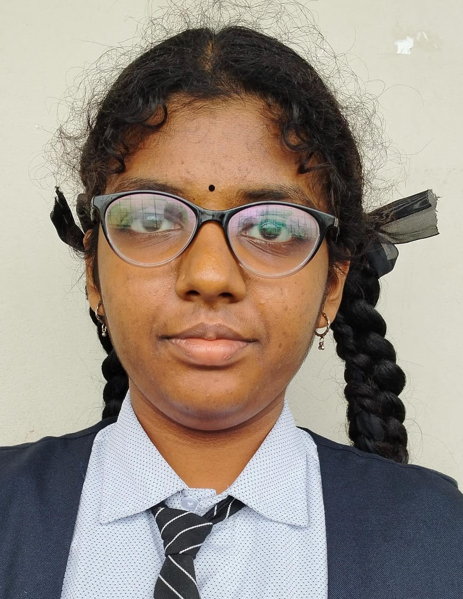

Early Life: Born on September 19, 1965, in Ohio to immigrant parents. She grew up in Needham, Massachusetts, with her younger sister and developed an interest in sports and the outdoors.
Education: Graduated from Needham High School in 1983. Attended the United States Naval Academy, graduating in 1987 with a bachelor's degree in physics.
Navy Career: Served as a naval aviator, flying SH-60 Seahawk and SH-3 Sea King helicopters. Held various roles including flight instructor, safety officer, and squadron commander.
NASA Career: Selected as an astronaut candidate in 1998. Completed training in 2000 and was assigned to the Astronaut Office. She flew on three space missions:
She completed 7 spacewalks totaling 50 hours and 40 minutes.
Awards and Honors: Navy Commendation Medal, Navy Achievement Medal, NASA Distinguished Service Medal, NASA Exceptional Service Medal, NASA Space Flight Medal, International Space Station Expedition 14/15 Crew Award.
Post-NASA Career: Retired from NASA in 2018. Currently serves as the Vice President and Chief Operating Officer of the Space Foundation.
Personal Life: Married to Michael J. Williams. Enjoys skiing and scuba diving. Supports various charitable organizations, including the Girl Scouts of the USA and the Boys & Girls Clubs of America.


NASA was established on October 1, 1958, as part of the United States government. NASA is not responsible for U.S. science and technology related to airplanes; it focuses on aeronautics and space.
What NASA Does:
Where is NASA?
What Has NASA Done?
NASA and Space Colonization:
What Planet is NASA Trying to Colonize? Mars is the focus of NASA's proposed colonization efforts, aiming to establish and maintain control over Martian land for potential exploitation and settlement.
Can Humans Survive in Space? Space is a harsh environment, and humans cannot survive without protection. The primary threats include the lack of oxygen and pressure, as well as temperature extremes and radiation.
How Long Can Humans Survive in Space Without Protection? Without a spacesuit, a human would lose consciousness in about 15 seconds, die within 90 seconds, and potentially freeze solid within 12 to 26 hours.
NASA Projects:

Sophiya is a humanoid robot developed for various applications, with specialties that include:
Some potential applications of Sophiya's specialties include therapy and counseling, education and training, customer service and support, healthcare assistance, event hosting and entertainment, and research and development. Keep in mind that Sophiya's specific capabilities and applications may vary depending on its configuration and the goals of its developers.

The impact of social media on education is a topic of debate among educators, researchers, and policymakers. On one hand, social media has transformed the education sector in numerous ways, making learning more accessible and convenient. Online platforms like YouTube and edX offer high-quality video lectures and courses on various subjects. Social media sites like Facebook, Twitter, and LinkedIn enable students to connect with educators, researchers, and peers worldwide, fostering global perspectives and collaborations.
Moreover, social media provides instant feedback, allowing students to clarify doubts and receive support in real-time. However, excessive social media use can hinder academic performance and cognitive development. Studies have shown that excessive social media use can lead to:
Furthermore, social media can perpetuate misinformation and disinformation, negatively impacting students' understanding of critical concepts. The constant stream of curated and manipulated content can create unrealistic expectations, promote materialism, and decrease self-esteem.
To maximize the benefits of social media in education, educators and policymakers must establish guidelines and regulations that promote responsible social media use. This includes teaching digital literacy, online safety, and critical thinking skills.

Reading is a fundamental activity that plays a crucial role in our lives. It helps us understand and appreciate the cultures of others, enriching our own cultural knowledge. By expanding our perspectives, reading enables us to make more rational decisions and solve problems effectively. It allows us to benefit from the experiences of others, thereby saving us from years of trial and error.
In today’s digital age, reading materials are more accessible than ever. With the widespread use of mobile phones and the internet, people can easily access books and articles without the need to visit physical libraries. This convenience saves both time and effort, making reading a popular and efficient way to acquire knowledge.
Reading is also a valuable hobby that should be practiced regularly. Allocating time each day to read can enhance our academic performance and provide numerous benefits in our personal lives. It is an activity that not only entertains but also educates and inspires.
Furthermore, reading history books allows us to connect with our past and understand the sacrifices made by our ancestors. Learning about the struggles they endured, including battles against colonial powers and their fight for freedom, fosters a sense of pride and appreciation for our heritage. Such historical knowledge helps us value and honor the efforts of our forebears and deepens our connection to our homeland.
In summary, reading is essential for personal growth, cultural enrichment, and historical understanding. It is a practice that benefits both our intellectual development and our appreciation of our own and others' histories.

Cricket began in England around the 16th century and evolved considerably over the centuries. By the 18th century, it had become a popular sport. Lord’s Stadium in England is known as the birthplace of cricket.
India played its first international match in 1926. Before 1983, India was considered an underdog, particularly in One Day Internationals (ODIs). However, the “Kapil Devils” shocked the world. India's group stage began with a surprising win against the West Indies, the two-time defending champions. They also defeated Zimbabwe and Australia in the group stage. In the semi-final, India faced England, restricting them to 213 runs, and chased down the target with ease. In the final against the “Mighty West Indies” at Lord’s Cricket Ground, India batted first and was all out for a modest total of 183 runs. Despite the bleak outlook, a remarkable bowling performance by India, led by Mohinder Amarnath and Madan Lal, saw the West Indies bundled out for 140 runs. Thus, the Kapil Devils gifted us the World Cup.
India’s World Cup win in 1983 was a turning point for cricket in the country, elevating it to a near-religious status. The victory inspired a new generation of cricketers and increased financial and infrastructural support for the sport in India.
The period from 1985 to 2007 is known as the mid-phase of Indian cricket. During these years, the Indian team had mixed performances. India reached the final of the 2003 ODI World Cup but lost under Sourav Ganguly’s captaincy. Important Moments in the Mid-Phase include:
After a disappointing exit from the 2007 ODI World Cup, many senior players opted out of the T20 World Cup, giving a chance to the young Indian team. Players like Rohit Sharma, MS Dhoni, Yusuf Pathan, and Yuvraj Singh were part of the squad. Dhoni led the team well, and they reached the semi-finals, defeating the modern-day greats, Australia, in the process. The final was against arch-rivals Pakistan. Gautam Gambhir’s great knock helped MS Dhoni lift the first T20 World Cup.
Virat Kohli made his ODI debut on August 18, 2008, against Sri Lanka. Little did anyone know that he would transform into King Kohli and rule the cricketing world.
India prepared meticulously for the ODI World Cup under MS Dhoni’s leadership. Their preparation paid off as the team performed well in the group stage, defeated former champions Australia in the quarter-finals, and Pakistan in the semi-finals. The final was against Sri Lanka on April 2, 2011, at Wankhede Stadium, Mumbai. India bowled first and restricted Sri Lanka to a total of 275 runs. India chased the total with the help of Gambhir’s 97 and Dhoni’s 91, winning the World Cup for the second time. They also won the 2013 Champions Trophy against England.
India began to struggle in knockout stages, and the magic of MS Dhoni’s captaincy seemed to diminish. India failed to win the 2014 and 2015 World Cups. Dhoni retired from Test cricket in 2014. Virat Kohli took over as captain and made significant changes to the team.
India defeated every team, including Australia and arch-rivals Pakistan, and reached the final unbeaten. Despite high expectations, Australia won the final. November 19, 2023, was one of the hardest nights for India. Virat Kohli was named Player of the Tournament with over 700 runs and 1 wicket.
India started well with Virat Kohli opening the innings alongside Rohit Sharma in the World Cup. Kohli struggled in the group stage with just 151 runs, but Jasprit Bumrah played a crucial role in many victories, including against Pakistan, Afghanistan, and in the final. India dominated the group stage and faced England in the semi-finals, winning and reaching the final. In the 2022 T20 World Cup, India reached the semi-finals but lost. Rohit Sharma led the team well, but the batting order collapsed. Kohli’s strong innings of 76 helped India set a respectable total of 176. Jasprit Bumrah, Arshdeep Singh, and Hardik Pandya restricted South Africa to 169, fulfilling Rohit’s and millions of fans’ dreams. India finally won the World Cup, with Virat Kohli named Player of the Final and Jasprit Bumrah Player of the Tournament. Rohit Sharma, Virat Kohli, and Ravindra Jadeja announced their retirement from T20 Internationals.
Top 6 Players of Team India include:
In India’s cricketing success, coach Rahul Dravid played an important role. He has been replaced by Gautam Gambhir. Will Gambhir continue the legacy of coaching? Let’s see. Let’s hope that India will win the upcoming Champions Trophy, World Test Championship, and the 2027 ODI World Cup. GOOD LUCK, INDIA!


There is destruction happening all over the world. People are terrified and are being killed by strange creatures that look like humans. Buildings are being destroyed. No one knows what is happening in the world. Some people think these creatures are monsters, while some scientists imagine them as zombies, and others believe they are a new type of disease affecting humans.
So, what are these creatures and why are they destroying humankind? The answer is that these creatures are from a species called "parasites" that look like insects. A parasite is an organism that depends on another organism for survival. The organism on which the parasite depends is known as the "host." If the host dies, the parasite will also die. In order to survive, the parasite must protect its host. They come from another planet to Earth to rule our world because we are benefited with natural resources like air, water, soil, etc.
Among all the parasites, there is a half-parasite. What is a half-parasite? A half-parasite is a unique case. This half-parasite is named Heidi, who works in a convenience store. On the day when all the parasites landed on Earth, Heidi was attacked by a gang. Heidi tried to call the police, but the gang became angry and stabbed her severely. She was almost killed.
At that time, the parasite entered Heidi's body after killing the gangster who had stabbed her. Soon, Heidi was taken to a hospital by a stranger and admitted as she was unconscious and severely hurt. Over the next three days, her wounds began to heal. In a few days, Heidi started feeling changes in her body. One day, she saw the parasites revealed in her body and was surprised by the changes.
She began writing questions on her mobile, wondering, "Who am I? Why am I feeling this way?" In her diary, she wrote, "I am a parasite." A few minutes later, she became unconscious. When she woke up, she saw herself turning into a full parasite. This realization made Heidi very sad. She regretted being a half-parasite.
While Heidi was in the hospital, the department head of the special task force noticed her and confirmed that she was a half-parasite. They used Heidi to trap other parasites, including the leader parasite. The special task force believed that killing the leader would end the threat because, once the leader was dead, the other parasites could be easily dealt with. However, it turned out that the leader's host body had a twin. The parasite that was killed was not the actual leader but a decoy.
Soon, the actual leader killed every human, including Heidi, and conquered the whole place. The leader began conquering other locations and planned to send Earth's natural resources to their planet through their spaceships, intending to merge both planets together.
